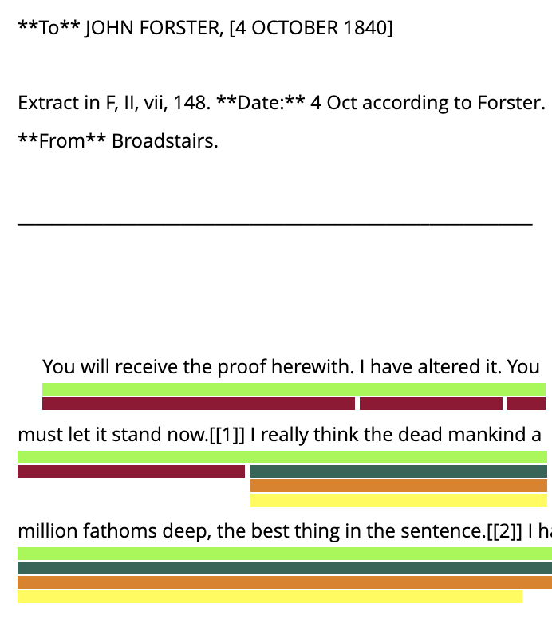
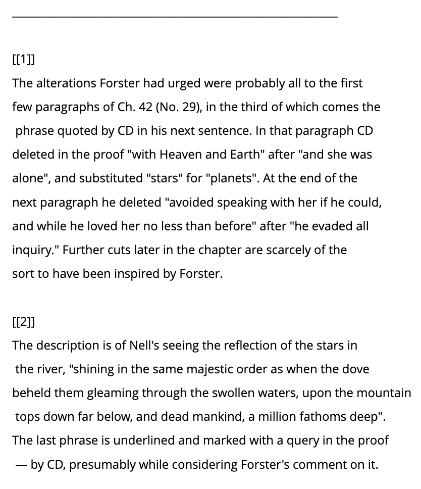

Annotation Categories and Example
Letter
Each letter contains metadata, including:
- Recipient: The person to whom the letter is addressed.
- Date: The date the letter was written.
Intertextual Traces
Intertextual traces include all the categories listed below and serve as the overarching concept. These
traces are identified by markers:
Intertextual Traces (1238)
- uncertain: Flags uncertainty in the annotation. Possible value: y
- markers: Identifies elements that indicate a reference.
Possible values: onomastic signals, linguistic code switching, graphemic interferences, signal
words, title, narrative echoes
Categories and Subcategories
The annotated categories distinguish which aspects of Dickens' works are referenced in the corresponding annotations. In addition to the main categories, specific subcategories have also been annotated, which can be viewed when expanding the categories.
Inspirations and Influences (117)
- Places and Travels (31)
- Personal Knowledge Fields (11)
- People (45)
- Social Injustice (12)
- Religion (5)
- Fiction (5)
- Autobiographical Influences (8)
Writing Process and Creative Insights (605)
- Creativity and Ideas (184)
- Intensity and Focus (198)
- Progression and Flow (151)
- Mood and Psychological States (58)
- Workspace and Environment (14)
Editorial and Publishing Processes (611)
- Requests for Textual Material (37)
- Feedback and Reviews (136)
- Revision and Proofreading (72)
- Illustrations and Formatting (153)
- Submissions of Textual Material (80)
- Handling of Submitted Textual Material (13)
- Printing/Publishing (31)
- Publication Format and Instalments (68)
- Authorship and Pseudonyms (7)
- Translations (13)
Financial and Legal Aspects (150)
- Contracts and Agreements (43)
- Negotiations (14)
- Disputes (17)
- Revenue and Payments (49)
- Offers and Advances (13)
- Copyright & Piracy (14)
Marketing and Promotion (287)
- Advertising and Publicity (33)
- Public Readings and Events (241)
- Recommendations (13)
Impact and Reception (204)
- Readership (30)
- Cultural and Societal Influence (28)
- Critical Acclaim and Reviews (54)
- Success (63)
- Theatre (29)
Elements of Fictional Craft (507)
- Characters (328)
- Plotlines and Narrative Echoes (40)
- Setting and World-Building (27)
- Reused Lexicon and Style (83)
- Narrative Devices and Techniques (23)
- Adaptation of Letter Content (6)
Quality and Evaluation (127)
- Textual Quality (85)
- Book Design and Production (42)
Gratitude and Acknowledgment (99)
- Gifts and Tokens of Appreciation (59)
- Release Parties (11)
- Dedications (29)
Properties
Every annotation has the following properties
Annotation Example
Excerpt from an Annotated Letter


|
Color |
Category |
|
Intertextual Trace |
|
Editorial and Publishing Processes
|
|
Elements of Fictional Craft |
|
Quality and Evaluation |
|
Writing Process and Creative Insight
|